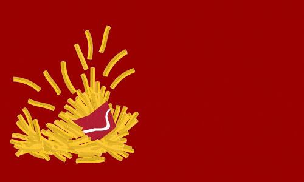

 |
We at Bikaneri bhujiya belive in a healthy food to Eat, so we used traditional methodlogies with intergrating the techlogies for reduce oil in the snack, so you can enjoy cruncy crispy and a healthy snacks to eat. Bikaneri bhujia is a great heathy snack to eat which is made from various home ingredients such as pulses,chilli, corriender etc. it is a snack which can eat without damaging your health. So keap eating healthy and enjoy the richest test of bhujiya. To eat buy now |
We have quite great range of products for taking care of our customers taste in mind. We know everbody love to eat spicy but as per their taste habbit, so we made product which will cater of your spicier eating taste & habbit. We have bhujiya in lesser to higher range of spicy in taste, along with the ranges of sweet products. to know more just visit our product catalogue page.
Product list